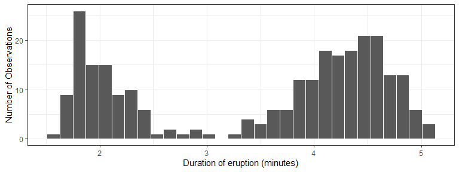
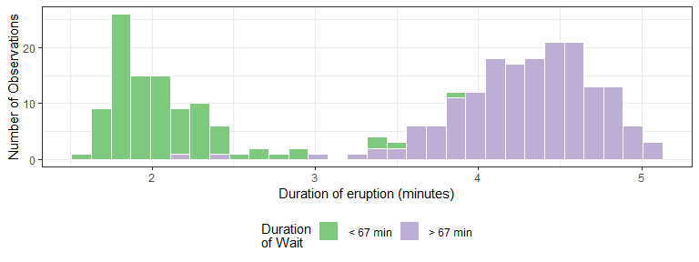
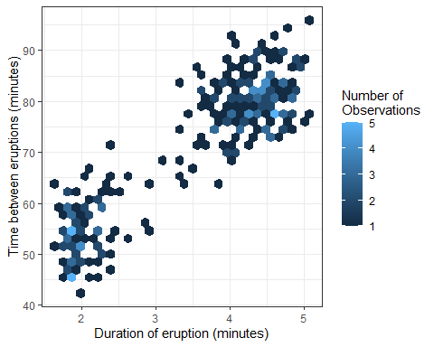

‘There are no routine statistical questions, only questionable statistical routines.’
— Sir David Cox
‘Far better an approximate answer to the right question, which is often vague, than an exact answer to the wrong question, which can always be made precise.’
— John Tukey
Mean hours per week outside of class for last 2 weeks? socrative.com Room#: PALMER4992
–>
EDA is fundamentally a creative process. And like most creative processes, the key to asking quality questions is to generate a large quantity of questions.
case_when()starwars %>%
select(name:mass, gender, species) %>%
mutate(
type = case_when(
height > 200 | mass > 200 ~ "large",
species == "Droid" ~ "robot",
TRUE ~ "other"
)
)
#> # A tibble: 87 x 6
#> name height mass gender species type
#> <chr> <int> <dbl> <chr> <chr> <chr>
#> 1 Luke Skywalker 172 77 male Human other
#> 2 C-3PO 167 75 <NA> Droid robot
#> 3 R2-D2 96 32 <NA> Droid robot
#> 4 Darth Vader 202 136 male Human largeAny Questions
faithful %>%
ggplot(aes(x = eruptions)) +
geom_histogram(color = "white") +
theme_bw() +
labs(x = "Duration of eruption (minutes)",
y = "Number of Observations")
faithful %>%
mutate(waiting_group = case_when(waiting < 67 ~ " < 67 min",
waiting >= 67 ~ " > 67 min")) %>%
ggplot(aes(x = eruptions, fill = waiting_group)) +
geom_histogram(color = "white") +
scale_fill_brewer(type = "qual") +
theme_bw() + theme(legend.position = "bottom") +
labs(x = "Duration of eruption (minutes)",
fill = "Duration\nof Wait", y = "Number of Observations")
faithful %>%
ggplot(aes(x = eruptions, y = waiting)) +
geom_hex() + theme_bw() +
labs(x = "Duration of eruption (minutes)",
y = "Time between eruptions (minutes)",
fill = "Number of\nObservations")
{kind=link}